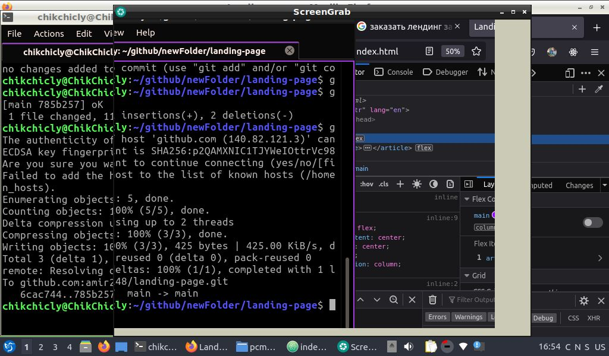

Заказать лендинг по макету из фигмы с SEO оптимизацией и продвижением в контекстной рекламе.
Order a landing page based on a figma layout with SEO optimization and promotion in contextual advertising.
Такой лендинг дешевый и сердитый как старый дед с резиновой попой. Все в лучших традициях черного юмора! С долей вразумительной правды. Суровой и беспощадной. Чтобы работать надо находить клиентов которым нужны товары или услуги ради которых осуществляется работа с целью получения финансовой прибыли “имеющих ценность на планете Земля”. Например лендинг простой и быстрый разумно начинать с ценника в три сотки. Три сотки это не деньги. поэтому и почему бы и не попробовать прощупать почвы и увидеть что получиться.
Such a landing page is cheap and angry like an old grandfather with a rubber booty. All in the best traditions of black humor! With a share of intelligible truth. Harsh and merciless. To work, you need to find customers who need goods or services for which work is carried out in order to obtain financial profit "having value on planet Earth." For example, a simple and fast landing page is reasonable to start with a price tag of three hundred square meters. Three hundred is not money. so and why not try to test the soil and see what happens.
Сколько может продвигаться статья сверстанная на семантических тегах со структурированной разметкой данных и продвижением в контекстной рекламе, на условиях Великой дешевки яндекса. Очень дешево, потому что Великая московская дешевка яндекс - это самое дно. И лучше даже не употреблять этой грязное слово, чтобы держать свою речь и словарный запас в чистоте.
How long can an article made up on semantic tags with structured data markup and promotion in contextual advertising, on the terms of the Great Cheap Yandex, be promoted. Very cheap, because the Great Moscow Cheap Yandex is the very bottom. And it's better not to even use this dirty word in order to keep your speech and vocabulary clean.
По секрету всему свету.
Secretly around the world.
Открыть долларовый счет через райфайзен банк и передавать реквизиты на оплату на запад, потому что там люди живут с работой которая оплачивается материальными средствами имеющими ценность. Сделать это можно только через райфайзен банк. Хотя способ это не самый лучший. Потому что необходимо уплачивать налоги сразу в двух странах. В США потому что их счет и валюта и в России потому что необходимо открыть счет для самозанятых и уплачивать 0,4%. В традициях полнейшей дешовки. Это с трех соток 12 коммунистических рублей. Сумма такая же маленькая как карликовое государство бункерного типа - московия.
Open a dollar account through a Raiffeisen bank and send payment details to the west, because people there live with work that is paid for with valuable material resources. This can only be done through Raiffeisen Bank. Although this is not the best way. Because it is necessary to pay taxes in two countries at once. In the USA because their account and currency and in Russia because it is necessary to open an account for the self-employed and pay 0.4%. In the tradition of sheer cheapness. This is 12 communist rubles from three acres. The amount is as small as the dwarf state of the bunker type - Muscovy.
Сколько может стоять лендинг по макету из фигмы?
How long can a figma landing page cost?
Простой сайт для мобильного стоит по версии ёнтернета от 500 рублей. Поэтому ценник можно снижать бесконечно. Но сколько может стоять лендинг с семантическими тегами и структурированной разметкой данных? За целый день беспрерывной работы вполне возможно просить три рубля “3000”. По версии веб мастерской имени барона сайтоверстаузена. Потому что делая лендинг за пять соток, с учетом потраченной электроэнергии, затраченных сил. Пятьсот рублей никак не компенсируют. Не компенсируют нормальным людям, но только не москвичам. История помнит что гитлер был москвичом и полным веганом, он кушал только нацистский супчик “полностью вегетарианский”, обезжиренный. Абсолютно бесполезный и пустой. По этой причине мозг бездействовал, у него не было сил чтобы мыслить. Ведь мозгу нужны: белки, жиры и углеводы. Для полноценной работы.
A simple mobile site costs по версии ёнтернета от 500 rubles. Therefore, the price tag can be reduced indefinitely. But how much can a landing page with semantic tags and structured data markup cost? For a whole day of continuous work, it is quite possible to ask for three rubles “3000”. According to the web workshop named after Baron Siterstauzen. Because making a landing page for five acres, taking into account the electricity spent, the effort expended. Five hundred rubles does not compensate in any way. They do not compensate normal people, but not Muscovites. History remembers that Hitler was a Muscovite and a complete vegan, he ate only the Nazi soup "completely vegetarian", fat-free. Completely useless and empty. For this reason, the brain was inactive, it did not have the strength to think. After all, the brain needs: proteins, fats and carbohydrates. For full-fledged work.
Поэтому три рубля “3000руБля” это нормальная цена за лендинг по макету из фигмы со структурированной разметкой данных и семантическими тегами.
Therefore, three rubles “3000 rubles” is a normal price for a landing page based on a figma layout with structured data markup and semantic tags.
https://qucu.ru/comments/